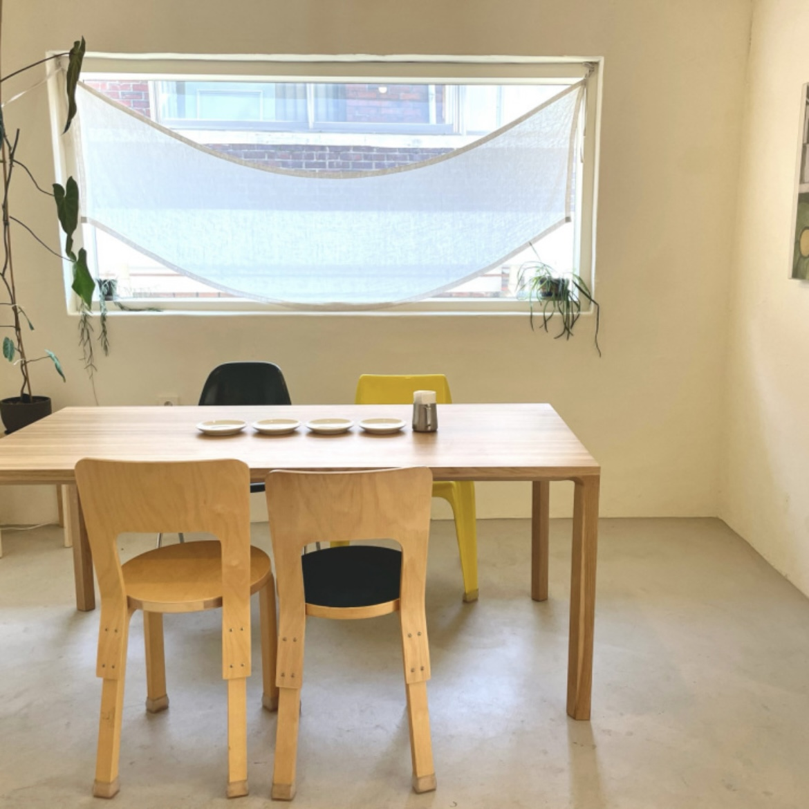
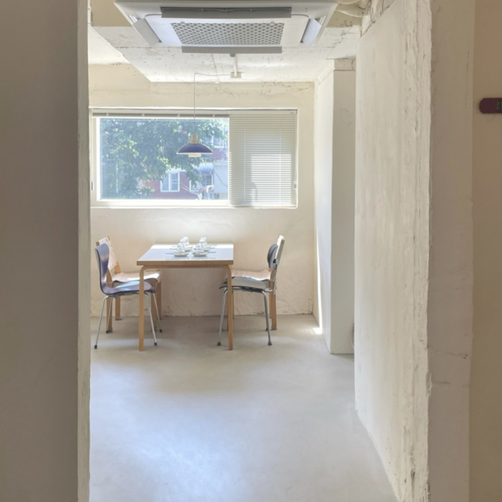
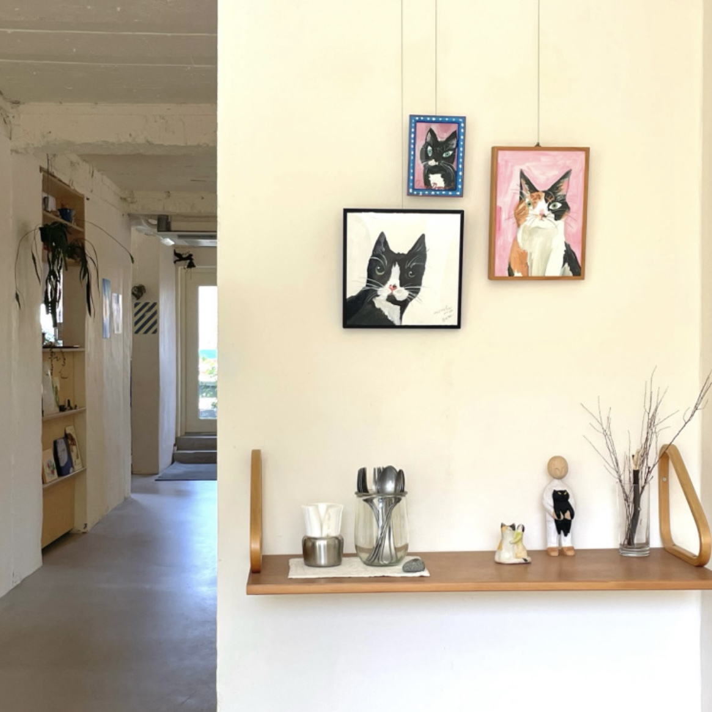

메뉴 소개
오시는 길
from 영등포
from 봉천
from 화서
특별한 제철 재료의 행궁동 파스타 맛집
수원 행궁동 파스타 브런치맛집
플랑문
. 제철재료로 만드는 맛있고 건강한 식사와 음료를 제공합니다.

 
위치
경기 수원시 팔달구 화서문로51번길 7 1층
운영 시간
평일, 토요일 - 11:00 ~ 20:00
일요일 - 11:00 ~ 17:00
대중교통
장안문, 팔달구청, 행궁동 화성행궁 정류장에서 도보 5~10분
수원역 1호선 택시 이용 시 약 15분
주차
불가
휴무
매주 목, 금 (개인 사정 휴무 가능성 有)